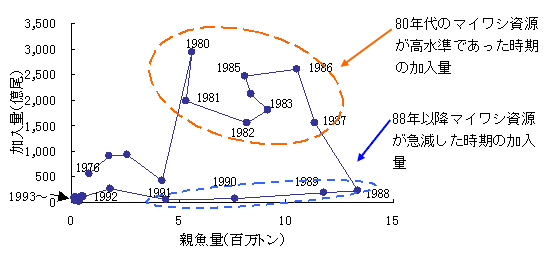
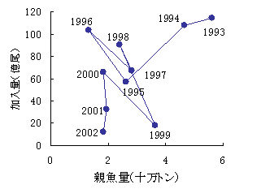

| ３ マイワシ資源（太平洋系群）の激減要因 |
|
（１）産卵親魚量と加入量の関係 産卵親魚量と加入量（漁場に加入してくる生後８か月程度０歳魚の尾数）の関係を示しています。資源が高水準であった１９８０年代は２０００〜３０００億尾の高い水準で加入が得られていますが、１９８８年を境に、産卵親魚量は多いのですが、５０〜２００億尾の極めて少ない加入の状況が４年間継続し、この間の漁業による産卵親魚の多獲も加わり、マイワシ資源は急激に減少しました。１９９３年以降は産卵親魚、加入量ともに極めて低い水準となり、最近では２０〜１００億尾程度の加入状況となっています。 マイワシ資源は、漁場に加入してくる０歳魚の増減によって資源量が大きく変化していきます。漁場に加入した０歳魚以上は、捕食等の自然要因による死亡と漁獲による死亡によってその資源量が減少していきます。漁場に加入した０歳魚の自然要因による死亡は年による多少の変動はあると考えられますが、稚魚期の自然死亡の大きさや変動に比べはるかに小さいと考えています。 産卵親魚量と加入量の関係(1976〜1992年)  産卵親魚量と加入量の関係(1993〜2002年)  [前ページ] [次ページ] [1] [2] [3] [4] [5] [6] 7 [8] [9] [10] [11] [12] [13] [14] [15] [16] [17] |